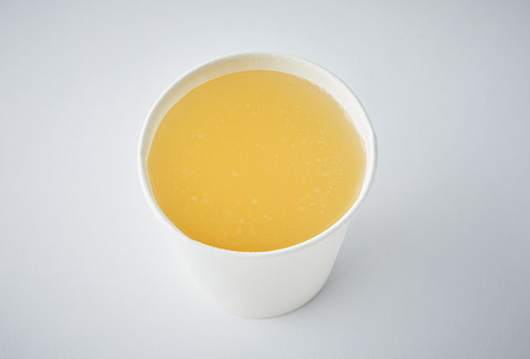
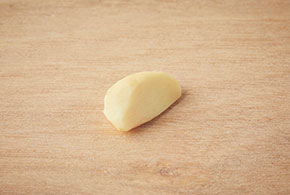
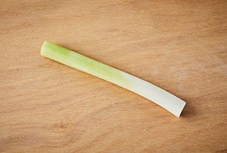
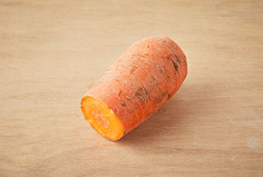
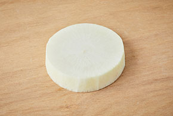
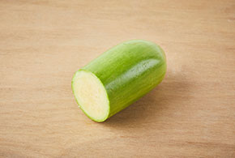

계량 팁
한 눈으로 살펴보는 간단한 계량팁을 준비했어요~
요리를 하려는데 계량 기구가 없다면
다른 도구를 사용하거나 사진 속 분량을 보고 눈대중으로 헤아려서 할 수 있어요!

밥숟가락 계량
테이블스푼(T)과 티스푼(t)은 어느 정도일까요?
- 성인용 밥숟가락으로 계량해 볼 수 있어요.
-
1 테이블스푼 (1T) = 15ml
밥숟가락 1 큰술 정도의 양
-

1 티스푼 (1t) = 5ml
밥숟가락 1/3 큰술 정도의 양

종이컵 계량
밥숟가락 단위보다 더 많은 양은 어떻게 계량해야 할까요?
- 소형 종이컵에 한 컵 가득 담은 양을 참고하여 가늠해볼 수 있어요.
-

액체 가득 1 컵 = 약 180ml
-

윗면을 깎아낸 밀가루 1 컵 = 약 100g
재료별 분량
자주 쓰는 재료들의 무게가 궁금해요!
- 사진에 담긴 재료의 양을 참고하여 눈대중으로 분량을 재어봅시다.
-

양파(1/4개=50g)
-

마늘(1쪽=5g)
-

생강(1톨 = 약 15g)
-

대파 흰 부분(1대 = 약15cm)
-

당근(1/2개=약100g)
-

무(1토막=약150g)
-

애호박(1/2개=약150g)
-

돼지고기(1토막=약200g)